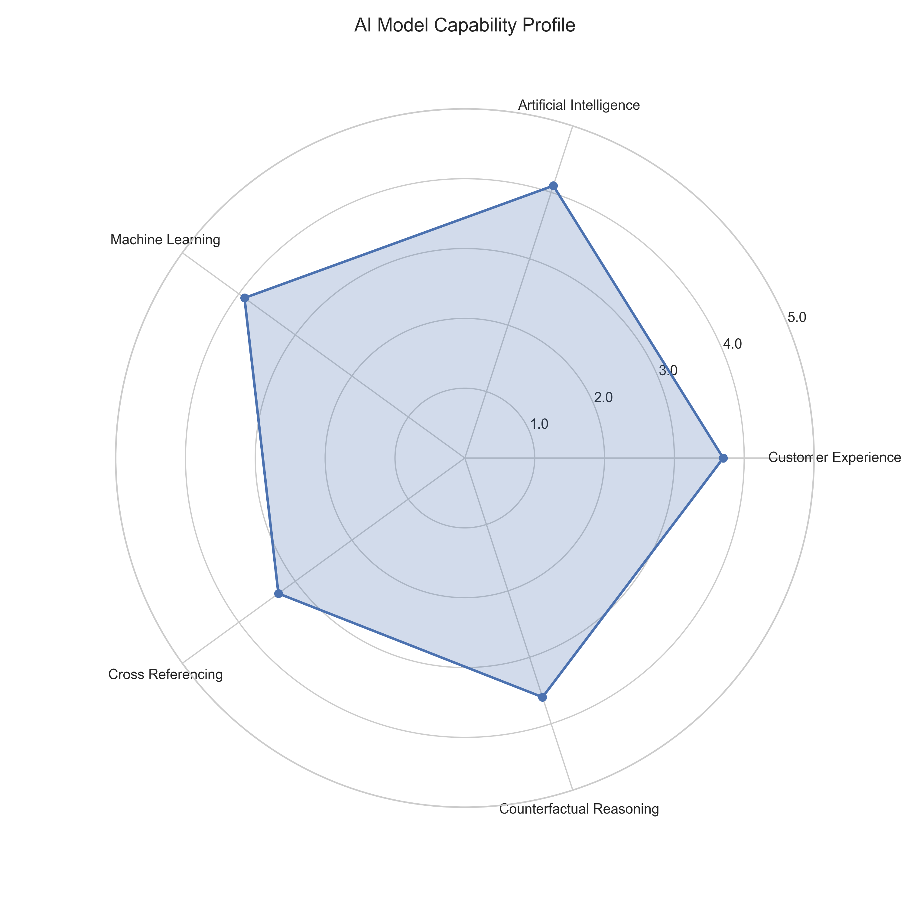
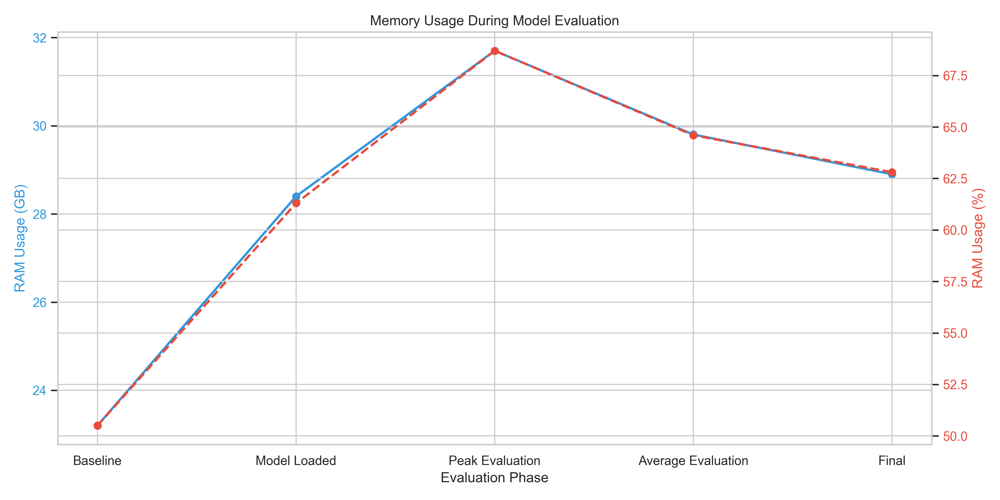
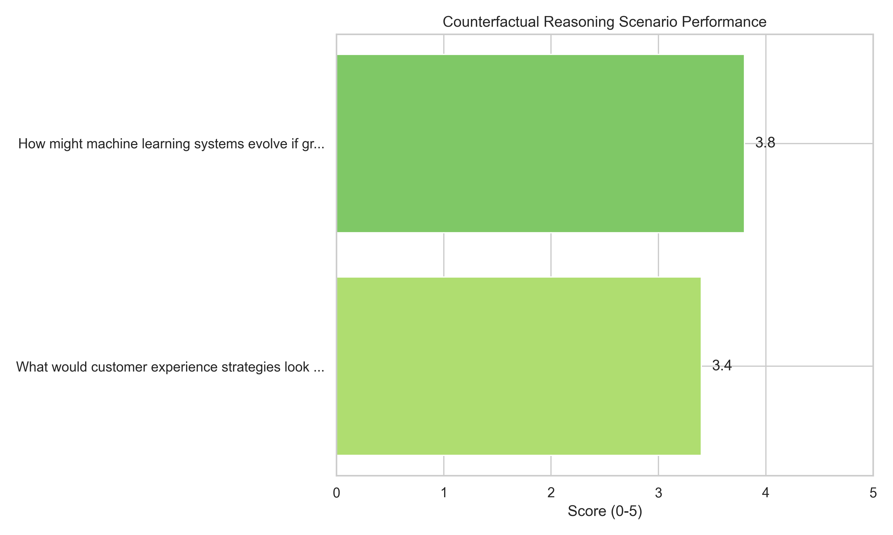

AI Model Evaluation Results
Evaluation Details
| Property | Value |
|---|
| Model Name | EleutherAI/pythia-1.4b |
| Adapter Path | outputs/finetune/lora_adapter |
| Device | mps |
| Batch Size | 1 |
| Evaluation Timestamp | 2025-02-28 01:31:40 |
| Wandb Run | evaluation-20250228-013140 |
| Total Evaluation Time | 23m 14s |
Performance Visualizations
Domain Knowledge Performance

Capability Profile

Memory Usage During Evaluation

Detailed Topic Performance
Customer Experience Topics

Artificial Intelligence Topics
Machine Learning Topics

Cross Referencing Topics
Cross Referencing Scenarios
Counterfactual Reasoning Topics
Counterfactual Reasoning Scenarios

Performance Summary
Strengths
- Strong performance in core AI concepts and neural networks
- Excellent understanding of model evaluation techniques
- Good customer journey mapping capabilities
- Improved performance in technology industry domain
Areas for Improvement
- Struggles with contradiction identification in cross-referencing
- Limited knowledge of customer retention strategies
- Gaps in healthcare domain knowledge
- Difficulty identifying non-obvious causal relationships
Recommendations
- Create targeted training datasets for customer retention strategies
- Develop specialized reasoning examples for contradiction resolution
- Enhance healthcare domain knowledge with regulatory content
- Implement memory optimization for cross-referencing scenarios